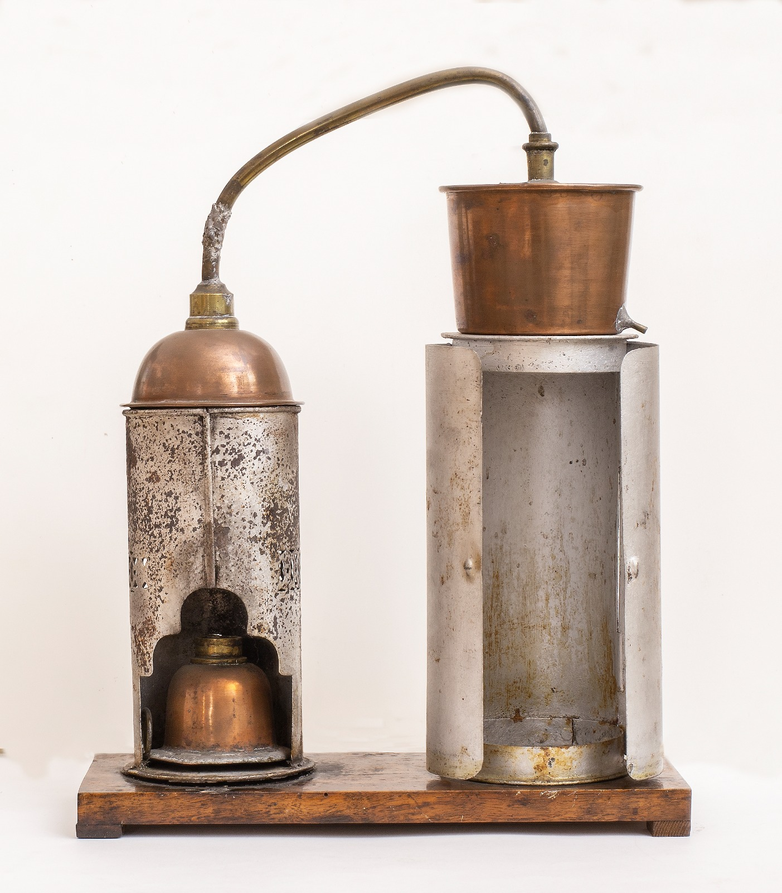

Distillatore

Scuola di provenienza: Istituto agrario ""F. De Sanctis", Avellino
Settore: Termologia
Costruttori: Sconosciuto
Materiali: Base di legno, bicchierino di vetro, ottone, rame e alluminio
Accessori: Nessuno
Stato di conservazione: Buono
Descrizione: Si tratta di un apparecchio costituito da : 1) un vaso di rame stagnato (detta cucurbita), che contiene il liquido da distillare e la cui parte inferiore è riscaldata da un piccolo bruciatore ad alcool; 2) un “capitello” che si avvita sulla cucurbita e che permette al vapore di uscire attraverso un lungo collo laterale; 3) il serpentino che è un tubo di stagno o di rame, avvolto ad elica e collocato in un contenitore pieno di acqua fredda: il serpentino ha lo scopo di condensare il vapore raffreddandolo. Volendo, ad esempio, distillare dell’acqua per liberarla dai sali che contiene,si riempie la cucurbita per due terzi di acqua e si riscalda; l’acqua va in ebollizione e i vapori, che si svolgono, si condensano nel serpentino. L’acqua distillata, proveniente dalla condensazione si raccoglie in un recipiente, le materie fisse (i sali contenuti dall’acqua prima della distillazione) rimangono nella cucurbita. Se l’acqua del contenitore in cui pesca il serpentino diventa calda, bisogna sostituirla con acqua fredda.